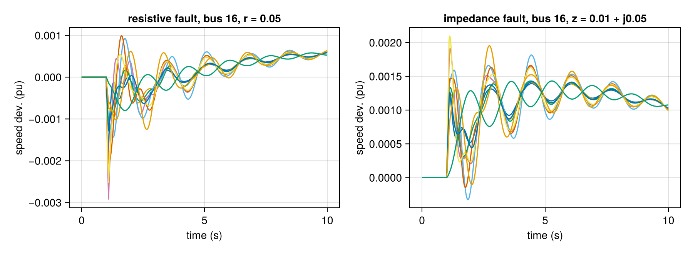
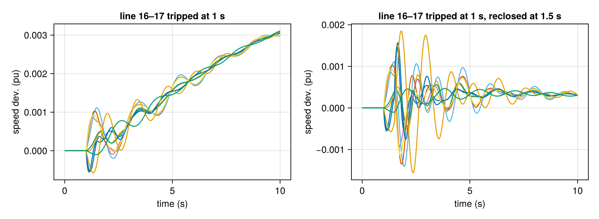
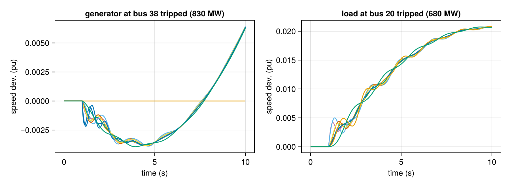
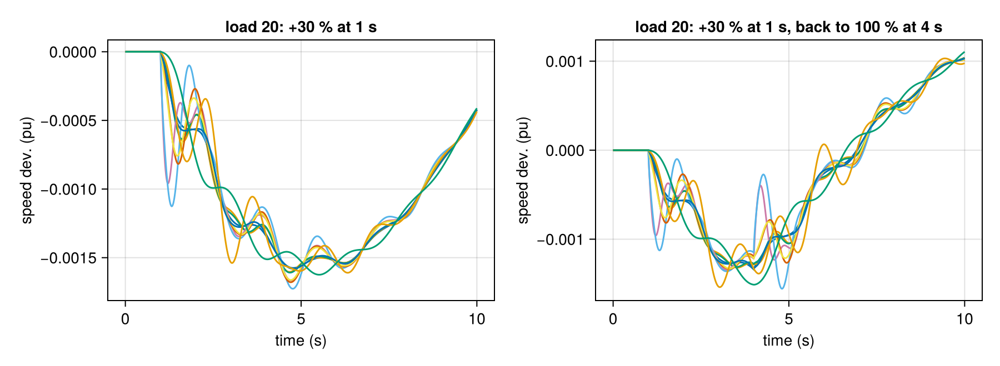
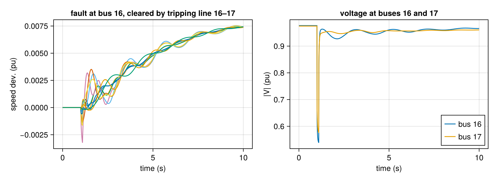

Contingencies and events
Events are registered on the system before calling integrate!. They are applied between time steps: the step that lands on the event time is computed with the old equations, then the event changes the system and the algebraic equations are re-solved. Everything is undone when integrate! returns, so the same sys can be reused.
Devices are addressed the way they appear in the PSS/E files: external bus number + id. Quotes and blanks in ids are ignored ("1", "'1 '" and 1 are the same).
| event | constructor | effect |
|---|---|---|
| bus fault | ContingencyEvent(bus, r, ton, toff; xfault) | shunt 1/(r + jx) to ground during [ton, toff) |
| line trip | create_trip_line_event(sys, from, to, t; ckt, toff) + add_trip_event! | branch removed at t (reclosed at toff) |
| generator trip | add_generator_trip!(sys, bus, id, t) | machine + its governor/exciter/stabilizer offline |
| load trip | add_load_trip!(sys, bus, id, t) | load disconnected |
| load step | create_load_step_event(sys, bus, id, t, scale) + add_load_step_event! | load becomes scale × its initial value |
We use the New England 39-bus system (10 machines with governors) and plot the machine speeds for each kind of event.
using GradPower, CairoMakie
ex = joinpath(pkgdir(GradPower), "examples")
sys = from_psse(joinpath(ex, "IEEE39.raw"), joinpath(ex, "IEEE39_gov.dyr"))
build_network!(sys); runpf!(sys)
dp = DynamicProblem(sys); initialize_dynamics!(dp, sys)
z0 = copy(dp.zvec)
w = GradPower.gen_speeds(sys)
function clear_events!(sys)
d = sys.dynamic
foreach(empty!, (d.events, d.disconnect_events, d.trip_events, d.load_step_events))
end
function speeds_plot(pos, title; tf = 10.0)
dp.zvec .= z0
t, tr = integrate!(dp, sys, tf)
ax = Axis(pos, title = title, xlabel = "time (s)", ylabel = "speed dev. (pu)")
foreach(i -> lines!(ax, t, tr[i, :]), w)
clear_events!(sys)
return t, tr
endFaults
A resistive fault takes r only; xfault adds a reactance. A fault with zero impedance cannot be represented (infinite admittance) and is rejected: use a small impedance instead.
fig = Figure(size = (900, 330))
add_event!(sys, ContingencyEvent(sys.busmap[16], 0.05, 1.0, 1.1))
speeds_plot(fig[1, 1], "resistive fault, bus 16, r = 0.05")
add_event!(sys, ContingencyEvent(sys.busmap[16], 0.01, 1.0, 1.1; xfault = 0.05))
speeds_plot(fig[1, 2], "impedance fault, bus 16, z = 0.01 + j0.05")
fig
Line trips and parallel circuits
Lines are found by their two PSS/E buses (in either order) and, when there are several in parallel, by their circuit id ckt. Without ckt on a parallel pair, GradPower refuses to guess and lists the circuits. A line can be reclosed by passing toff.
find_branch(sys, 16, 17) # index into sys.branches21fig = Figure(size = (900, 330))
add_trip_event!(sys, create_trip_line_event(sys, 16, 17, 1.0))
speeds_plot(fig[1, 1], "line 16–17 tripped at 1 s")
add_trip_event!(sys, create_trip_line_event(sys, 16, 17, 1.0; toff = 1.5))
speeds_plot(fig[1, 2], "line 16–17 tripped at 1 s, reclosed at 1.5 s")
fig
Generator and load outages
A generator trip disconnects the machine and every controller attached to it. Their states freeze at their last value, and the machine stops injecting current. generator_devices shows what will go offline:
[nameof(typeof(sys.dynamic.devices[i].dtype)) for i in generator_devices(sys, 38, "1")]2-element Vector{Symbol}:
:Genrou
:IEESGOfig = Figure(size = (900, 330))
add_generator_trip!(sys, 38, "1", 1.0)
speeds_plot(fig[1, 1], "generator at bus 38 tripped (830 MW)")
add_load_trip!(sys, 20, "1", 1.0)
speeds_plot(fig[1, 2], "load at bus 20 tripped (680 MW)")
fig
Losing generation makes the frequency fall, and losing load makes it rise. The governors then act on it. The tripped machine's speed is the flat line in the left plot.
Load steps
Load steps are relative to the initial load (both the constant-power and the constant-impedance parts scale). They do not compound: a later step with scale = 1.0 restores the load.
fig = Figure(size = (900, 330))
add_load_step_event!(sys, create_load_step_event(sys, 20, "1", 1.0, 1.3))
speeds_plot(fig[1, 1], "load 20: +30 % at 1 s")
add_load_step_event!(sys, create_load_step_event(sys, 20, "1", 1.0, 1.3))
add_load_step_event!(sys, create_load_step_event(sys, 20, "1", 4.0, 1.0))
speeds_plot(fig[1, 2], "load 20: +30 % at 1 s, back to 100 % at 4 s")
fig
Combining events
Any number of events of any kind can be registered together. A classic sequence is a fault, followed by its clearing through a line trip:
fig = Figure(size = (900, 330))
add_event!(sys, ContingencyEvent(sys.busmap[16], 0.01, 1.0, 1.1))
add_trip_event!(sys, create_trip_line_event(sys, 16, 17, 1.1))
t, tr = speeds_plot(fig[1, 1], "fault at bus 16, cleared by tripping line 16–17")
net = sys.dynamic.diff_dim + sys.dynamic.alg_dim
ax = Axis(fig[1, 2], title = "voltage at buses 16 and 17", xlabel = "time (s)", ylabel = "|V| (pu)")
for b in (16, 17)
i = sys.busmap[b]
lines!(ax, t, hypot.(tr[net + 2i - 1, :], tr[net + 2i, :]), label = "bus $b")
end
axislegend(ax, position = :rb)
fig